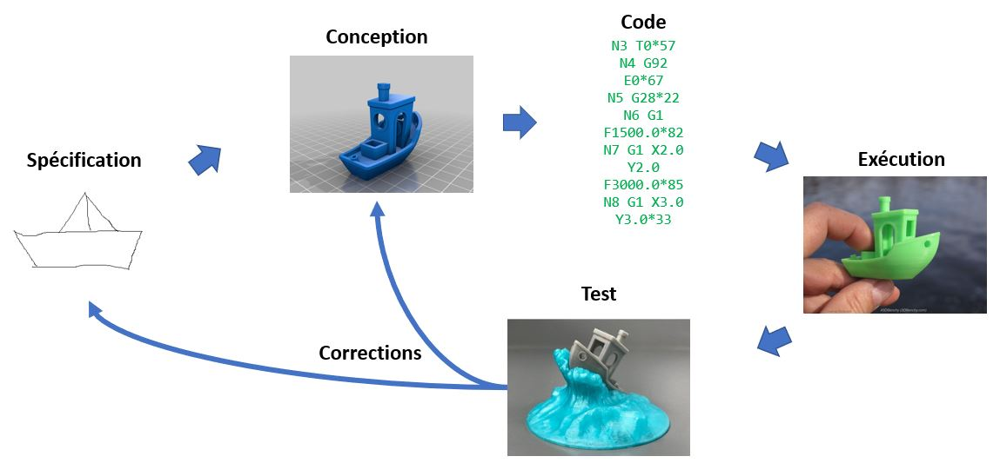
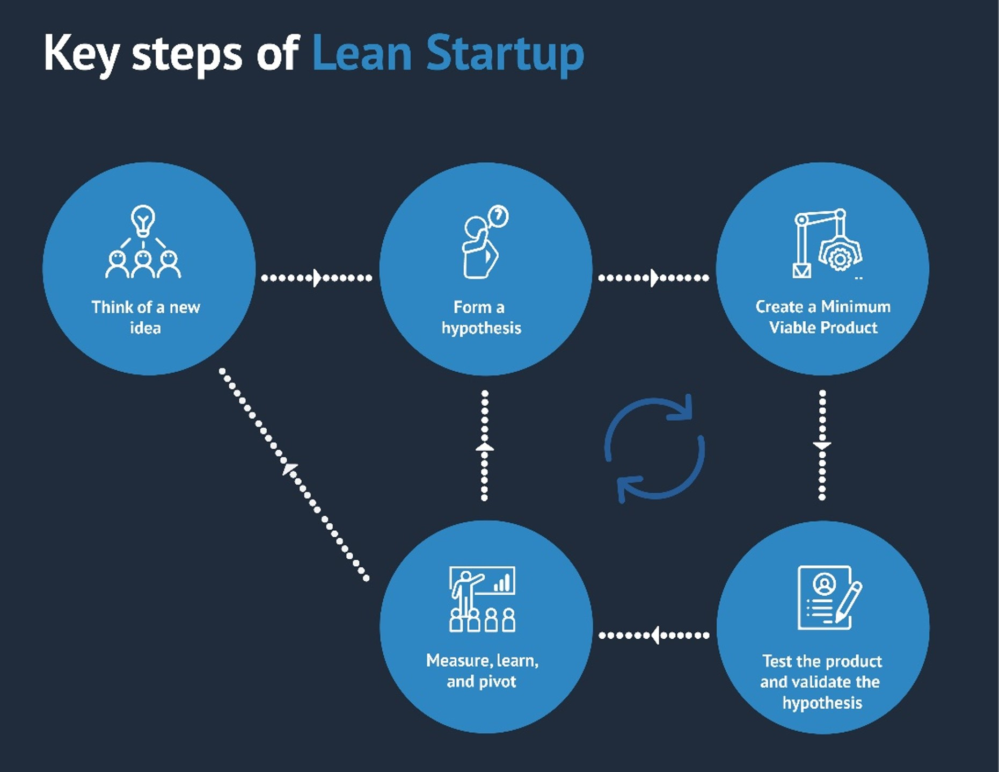
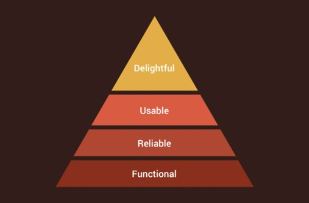
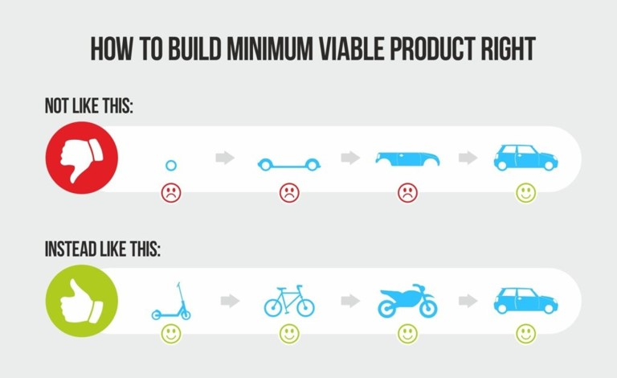
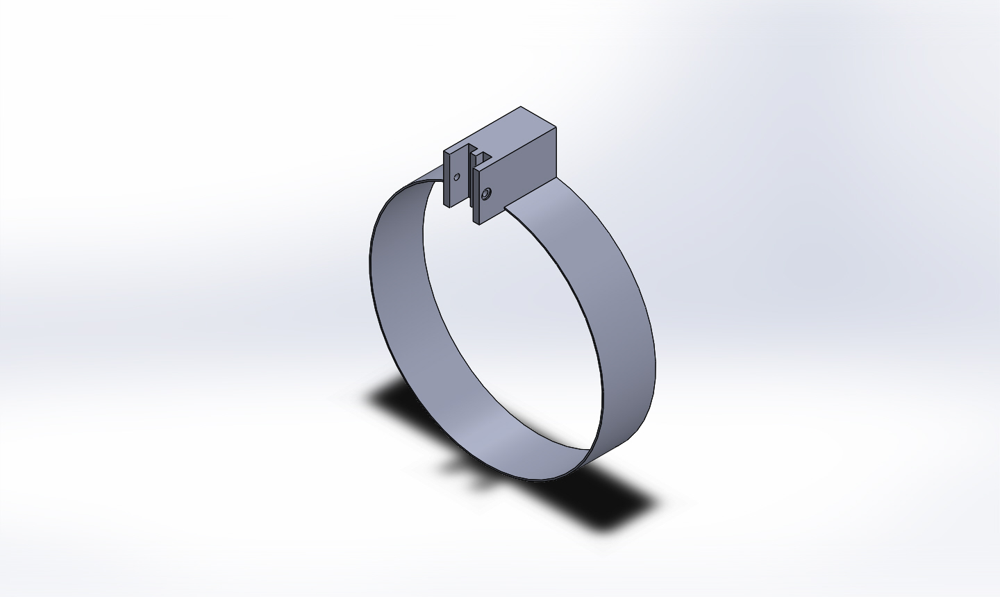
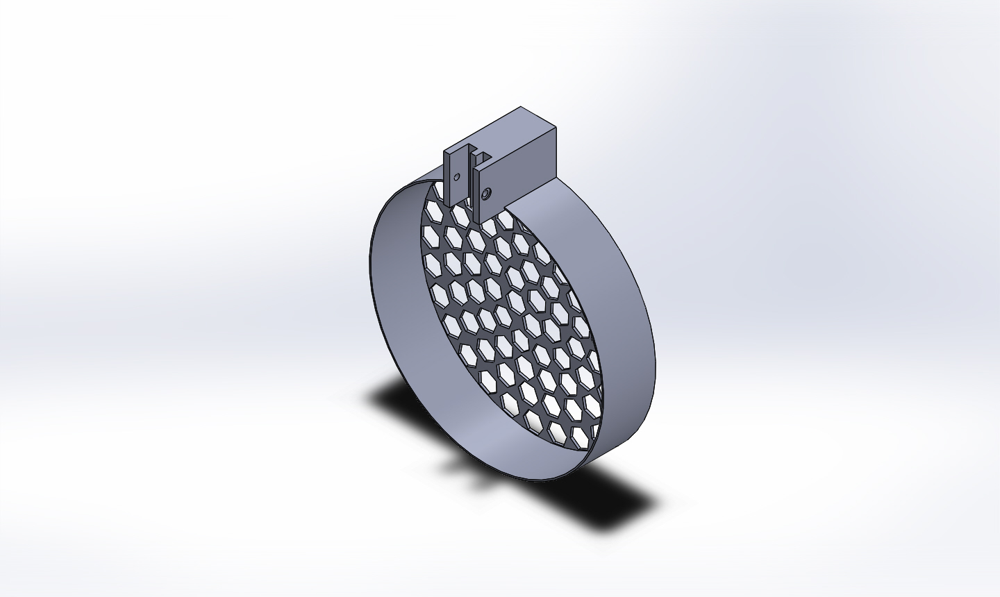
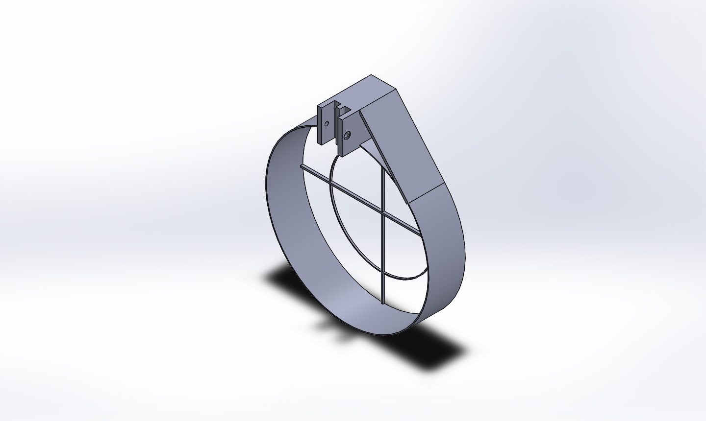
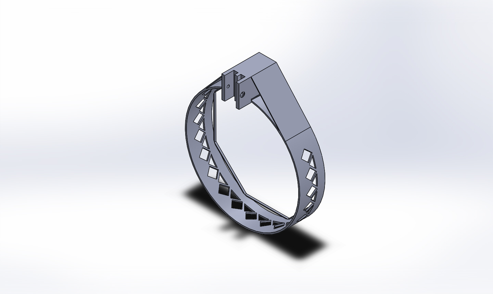
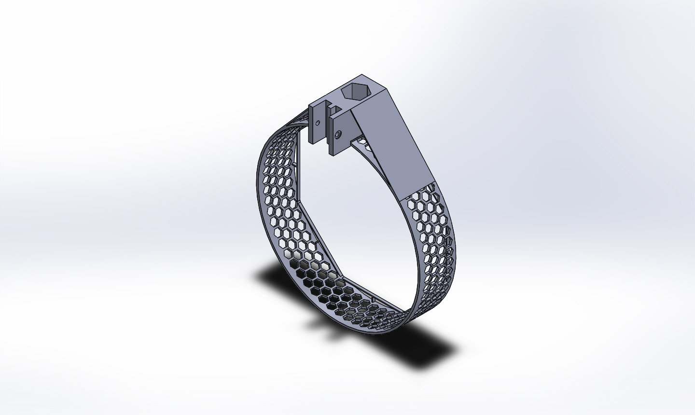

Prototypage (rapide)
Table of Contents
Le réel, c'est quand on se cogne —Jacques Lacan
Définitions
Prototype: Premier exemplaire construit d'un ensemble mécanique, d'un appareil, d'une machine et qui est destiné à en expérimenter en service les qualités en vue de la construction en série. —(Définition Larousse)
Le prototypage implique une approche transverse, pluridisciplinaire, itérative et … pragmatique! On parle de prototypage rapide lorsque les itérations sont courtes. Certaines technologies ont permis de démocratiser la fabriquation et de pouvoir sur un même site, concevoir et fabriquer.
Le prototype matérialise une étape d'évolution d'un projet, souvent pour démontrer ou infirmer le bien-fondé d'un ou plusieurs concept(s) mis en jeu dans ce projet, avant toute valorisation commerciale. — (Définition Wihipédia)
Prototypage rapide = Fail as fast as possible
Le prototypage croise également le domaine du design, qui lui aussi est assez vaste et ne renvoyant pas à la même chose selon le contexte.
Un des rôles du design est de répondre à des besoins, de résoudre des problèmes, de proposer des solutions nouvelles ou d’explorer des possibilités pour améliorer la qualité de vie des êtres humains —(Défnition Wikipedia)
Aborder la conception d'un prototype se fait souvent en équipe restreinte voir seul.
Méthodes

- Spécification
- Approche fonctionnelle
- Formulation d'hypotheses
- Reflexion collective ou individuelle
- Mise en forme (exigences, cahiers des charges)
- Conception
- Approche architecturale
- Modélisation
- Unitaire
- Assemblage
- Codage
- Simulation
- Plus ou moins fidèle selon la ganularité (niveau de détail du modèle)
- Test unitaire
- Fabrication
- Paramétrage des machines
- Choix des matériaux
- Vérification
- Mise en situation réel
- Test global
- Test unitaire
Design thinking, une approche pragmatique

Le design thinking est un process basé sur l’expérience utilisateur et l’itération rapide : tester et valider chaque étape de la création d’un produit avec l’utilisateur plutôt qu’aboutir pour se rendre compte qu’il ne plait pas. En effet il encourage à « faire » plutôt que « dire » : crayonner, dessiner, maquetter…
Qualités d'un prototype (1)
Un prototype méle souvent matériel et logiciel. Ces deux aspects sont en fait très proche lorsqu'il s'agit des qualités requises:
- Maintenabilité: facilite les itérations. Un code maintenable est un code qui est facile à lire et à comprendre. Il en va de même pour un modèle 3D.
- Modularité: facilite les évolutions et les réparations.
Exemples:
Hardware: Eviter l'utilisation de colle et de clous! Priveligier les assemblages à base de visses et d'écrou. Concernant la modélisation, utiliser quand c'est possible des paramètres.
Software: Eviter les copiers coller dans le code, autant utiliser des fonctions. Ne pas mettre de valeur numérique direct, utiliser des variables.
int rayon=3;
float pi=3.14;
int diametre = 2*rayon*pi;
printf("%d\n", diametre);
int diametre = 2*3*3.14;
printf("%d\n", diametre);
Qualités d'un prototype (2)

Ne jamais perdre de vue les fonctions essentiels de votre prototype, sa raison d'être. Celles ci constituent la base de votre prototype. Se supperposeront ensuite avec les itérations succesives d'autres qualités: La fiablilité, l'ergonomie, le confort… C'est sur ce point qu'intervient la notion de Minimum Viable Product.

Exemple d'itération d'un design 3D
Il s'agit d'un carter de protection d'une hélice de drone. La fonction première est de protéger les personnes de l'hélice. En effet, Celle ci tournant rapidement, il est difficile d'en déterminer les contours. A noter que ce carter doit être léger pour ne pas modifier le comportement du dispositif.
Version 1

Non fonctionnel, car trop souple. Les turbulences créés par l'hélice font bouger le carter qui vient heurter les pales.
Masse = 102.33 grammes (par modelisation avec une densité de 0.001g/mm3)
Epaisseur = 1.2 mm
Version 2
 Non fonctionnel, car la grille sensée rigidifié le carter empeche l'air de passer.
Masse = 129.53 grammes
Epaisseur = 1.2 mm
Version 3
 Fonctionnel, mais pas assez robuste.
Masse = 116.28 grammes
Epaisseur = 1.2 mm
Version 4

Fonctionnel, mais trop lourde.
Masse = 137.19 grammes
Epaisseur = 2.4 mm
Version 5

Fonctionnel, robuste, légère… et esthetique
Masse = 94.01 grammes
Epaisseur = 2.4 mm
Conception - CAO
CAD: Computed aided design / CAO: Conception assisté par ordinateur
Fabrication - FAO
CAM: Computed aided manufacturing / FAO: Fabrication assisté par ordinateur